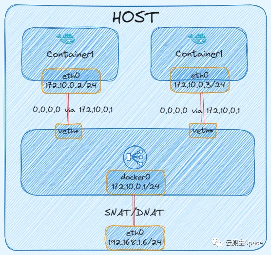

概述
- 本篇总结 Calico 的原理到实践
- Kubernetes 作为分布式调度平台本身不提供集群网络方案，只提出 CNI ( container network interface ) 标准，任何个人开发者或者网络厂商按照改标准实现，即可实现 Kubernetes 网络通信。Calico[1] 是 Kubernetes 生态系统中一种流行的网络选择，Calico 以其性能、灵活性而闻名。Calico 自身支持多种网络模式，例如 IPIP、VXLAN 等 Overlay 模式，还有 BGP 三层路由模式，都有成熟的实现，可根据环境和需求选择任一即可。
一 calico 基本原理之本机Pod之间通信
- pod-a、pod-b 都运行在 node-172-31-186-250，其中 pod-a ip 为 100.79.126.203，pod-b ip 为 100.79.126.201
$ kubectl get pods -o wide
NAME READY STATUS RESTARTS AGE IP NODE NOMINATED NODE READINESS GATES
pod-a-68c8f9cccd-sgtvg 1/1 Running 0 7m8s 100.79.126.203 node-172-31-186-250 <none> <none>
pod-b-68c8f9cccd-gr4hw 1/1 Running 0 6m53s 100.79.126.201 node-172-31-186-250 <none>
- 进入 pod-a 容器内去 ping pod-b，可以 ping 通，网络没有问题
/ # ping 100.79.126.201
PING 100.79.126.201 (100.79.126.201): 56 data bytes
64 bytes from 100.79.126.201: seq=0 ttl=63 time=0.103 ms
- 再查看 pod-a 内的路由，这有这两条路由，同样查看其他 pod，发现都是只有这两条路由。
/ # route -n
Kernel IP routing table
Destination Gateway Genmask Flags Metric Ref Use Iface
0.0.0.0 169.254.1.1 0.0.0.0 UG 0 0 0 eth0
169.254.1.1 0.0.0.0 255.255.255.255 UH 0 0 0 eth0
-
- 根据上述路由表，在 pod 内所有流量都会匹配第一条默认路由，从 eth0 网卡到达网关 169.254.1.1，但是主机上并没有任何一张网卡 ip 是 169.254.1.1。
在网络通信时，涉及到三层网络就会先匹配路由，从路由表查到网关后，首先会通过 ARP 获取网关的 MAC 地址，将报文中目标 MAC 地址改为网关的 MAC，但是网关的 IP 地址不会封装到网络任一报文中。也就是说这个网关 IP 地址是什么无所谓，只要能找到对应 MAC 地址即可，也就是有网卡能响应 ARP 请求即可。
- 在 pod-a 查看 pod 内 ARP 缓存：
/ # ip neigh
169.254.1.1 dev eth0 lladdr ee:ee:ee:ee:ee:ee used 0/0/0 probes 1 STALE
- 可以发现网关 169.254.1.1 的 MAC 地址是 ee:ee:ee:ee:ee:ee，那么这个 MAC 地址是哪个网关的呢？
无论是容器网络还是 K8S 网络，都是基于 Linux veth-pair 技术实现 Network namespace 间通信，所以在 pod-a 和主机节点上使用一对 veth-pair 连接。
在 pod 内 eth0@xxxx 是 veth-pair 的一端，pod-a 内的网卡名是 eth0@if331
/ # ip addr show dev eth0
3: eth0@if331: <BROADCAST,MULTICAST,UP,LOWER_UP,M-DOWN> mtu 1450 qdisc noqueue state UP qlen 1000
link/ether 5a:8a:10:57:e2:03 brd ff:ff:ff:ff:ff:ff
inet 100.79.126.203/32 scope global eth0
valid_lft forever preferred_lft forever
另一端则在物理主机节点上，在物理节点上有很多个以 calicoxxxxx@xx 命令的网卡，这些都是每个 pod veth-pair 的一端。每 pair 的接口均有相同的 inteface index，pod-a 是 331，所以直接在节点上查看：
$ ip link show | egrep '^331:' -A 1
331: cali14e7d81007d@if3: mtu 1450 qdisc noqueue state UP mode DEFAULT group default qlen 1000
link/ether ee:ee:ee:ee:ee:ee brd ff:ff:ff:ff:ff:ff link-netnsid 32
即 cali14e7d81007d 和 pod-a 中的 eth0 是一个 veth-pair，也就说明 pod-a eth0 与 主机的 cali14e7d81007d 在一个广播域，所以 pod-a 向网关 169.254.1.1 发起的 ARP 请求会被 cali14e7d81007d 接收，但是 cali14e7d81007d 上也没有配置 169.254.1.1 地址，为什么可以回复 ARP 请求？这里涉及到一个 Linux proxy_arp 知识：
将
/proc/sys/net/ipv4/conf/<interface-dev>/proxy_arp置为1，该网卡就会看起来像一个网关，会响应所有的ARP请求，并将自己的MAC地址告诉客户端。
下面查看节点上 cali14e7d81007d 的 proxy_arp 是否开启
$ cat /proc/sys/net/ipv4/conf/cali14e7d81007d/proxy_arp
1
确实开启了，所以说当 cali14e7d81007d 网卡收到 pod 内发出的 ARP 请求，就会回复 ARP，将自己的 MAC 地址返回给 pod-a。
当 pod-a 拿到网关 MAC 地址后，进行封包，报文发送到网关，也就是主机上的 cali14e7d81007d 。
报文到达主机后，即匹配主机路由，下面查看主机路由表：
$ route -n
Destination Gateway Genmask Flags MSS Window irtt Iface
100.79.126.201 0.0.0.0 255.255.255.255 UH 0 0 0 calieabe7761b00
可以发现发往 100.79.126.201( pod-b ip ) 的报文直接通过 calieabe7761b00 网卡出去，calieabe7761b00 网卡也就是 pod-b veth-pair 在主机上的一端，
进而报文通过 pod-b veth-pair 进入 pod-b 内。
以上就是同节点 pod 间通信的全过程，下面通过抓包来分析验证。
以下是同节点 Pod 间通信的报文流转图：
抓包验证
在 pod-a ping pod-b，同时主机 pod-a veth-pair 对端网卡即 cali14e7d81007d 抓包
在抓包之前，先通过 ip neigh flush dev eth0 命令清理 pod-a 的 arp 缓存，否则可能抓不到 ARP 报文
$ tcpdump -nn -i cali14e7d81007d -e
dropped privs to tcpdump
tcpdump: verbose output suppressed, use -v or -vv for full protocol decode
listening on cali14e7d81007d, link-type EN10MB (Ethernet), capture size 262144 bytes
# pod-a 发起广播, 获取网关 MAC 地址
16:22:59.584235 aa:64:43:69:fd:8d > ff:ff:ff:ff:ff:ff, ethertype ARP (0x0806), length 42: Request who-has 169.254.1.1 tell 100.79.126.235, length 28
# pod-a 对端网卡回复 ARP 请求
16:22:59.584286 ee:ee:ee:ee:ee:ee > aa:64:43:69:fd:8d, ethertype ARP (0x0806), length 42: Reply 169.254.1.1 is-at ee:ee:ee:ee:ee:ee, length 28
# 使用对端网卡的 MAC 地址进行报文封装
16:22:59.584290 aa:64:43:69:fd:8d > ee:ee:ee:ee:ee:ee, ethertype IPv4 (0x0800), length 98: 100.79.126.235 > 100.79.126.201: ICMP echo request, id 15, seq 0, length 64
16:22:59.584372 ee:ee:ee:ee:ee:ee > aa:64:43:69:fd:8d, ethertype IPv4 (0x0800), length 98: 100.79.126.201 > 100.79.126.235: ICMP echo reply, id 15, seq 0, length 64
16:23:00.584456 aa:64:43:69:fd:8d > ee:ee:ee:ee:ee:ee, ethertype IPv4 (0x0800), length 98: 100.79.126.235 > 100.79.126.201: ICMP echo request, id 15, seq 1, length 64
16:23:00.584526 ee:ee:ee:ee:ee:ee > aa:64:43:69:fd:8d, ethertype IPv4 (0x0800), length 98: 100.79.126.201 > 100.79.126.235: ICMP echo reply, id 15, seq 1, length 64
可以发现 pod-a 先发起 ARP 请求，获取网关 169.254.1.1 的 MAC 地址，由对端网卡 cali14e7d81007d 回复其 MAC 地址。
总结
- 同节点的 Pod 之间通信实际上还是利用的 Linux veth-pair 技术以及网络路由，并没有使用到 Calico 的核心网络模式，例如 IPIP、VXLAN、BGP。
二 calico 基本原理之VXLAN
-
VXLAN（Virtual eXtensible Local Area Network，虚拟扩展局域网）是一种网络虚拟化技术，旨在解决大型云数据中心和多租户环境中传统 VLAN（虚拟局域网）技术的局限性。VXLAN 通过在 UDP（User Datagram Protocol）之上封装第二层以太网帧，实现在第三层（IP）网络上的二层网络扩展，从而允许创建多达 1600 万个隔离的虚拟网络，远超 VLAN 的 4096 个网络限制。VXLAN 报文格式如下：
-
- VXLAN 标识头：VXLAN header 这里只需要关注一个字段，那就是VNI，前文简单提到过, 在目标 node 上的 flannel.1 上会对这个VNI字段进行 check，看是否与自己的 VNI 一致，一致的话才会进行处理。
-
- UDP 头：在外层新增 UDP 头，默认目的端口号是 4789
-
- IP 头：在外层新增 IP 头，源地址是当前节点物理网卡 IP，目的地址是对端节点物理网卡 IP
-
- MAC 头：源 MAC 是当前节点物理网卡 MAC 地址，目的 MAC 是对端节点物理网卡 MAC 地址
三 calico 基本原理之IPIP
四 calico 基本原理之BGP
五 caclio 0/1 Running 问题从解决到根因分析
六 关于169.254网段
-
169.254.x.x 是一个特殊的 IPv4 地址段，属于 APIPA（Automatic Private IP Addressing，自动专用IP寻址） 范围，主要用于以下情况：
-
- 1 当设备无法通过DHCP获取IP时
如果计算机或设备配置为自动获取IP（DHCP），但无法从DHCP服务器（如路由器）获得有效IP地址，系统会自动分配一个 169.254.x.x（子网掩码 255.255.0.0） 的地址。
这表明设备没有正确连接到网络或DHCP服务不可用。
-
- 2 链路本地地址（Link-Local Address）
这个网段（169.254.0.0/16）是预留给本地链路通信的，类似于IPv6的 fe80::/10。
-
它仅用于同一局域网内的设备间通信，无法被路由器转发到外网。
-
对比其他私有IP段
-
10.0.0.0/8、172.16.0.0/12、192.168.0.0/16是常规内网IP，需手动或DHCP分配。
-
169.254.0.0/16是系统自动分配的“应急地址”，表明网络配置异常。
也就是你的主机可以自己分配一个169.254.0.0/16网段内的IP，然后把网关设置为169.254.1.1, 此时只要主机和网关之间满足二层可通信即可，主机就可以把自己的包发到更加外围的网段
七 容器网络原理
1 Linux 虚拟网络技术
一般网络设备包括，交换机，路由器，网桥等，这些网络设备会存在多个网卡或者端口，那么 Linux 不仅仅可以作为网络设备，同时还可以实现虚拟网络设备，例如：网桥，虚拟网卡对等，那么 Network Namespace 就是利用 Linux 虚拟网络技术、路由、iptables 等技术来实现的。下面看看常用的 veth pair 和 bridge。
2 Linux veth pair
-
veth pair 是成对出现的一种虚拟网络设备接口，一端连着网络协议栈，一端彼此相连。veth pair 总是成对出现的，从一端进入的数据包将会在另一端出现。我们可以把 veth pair 看成一条网线两端连接的两张以太网卡。只要将 veth pair 每一段分别接入不同的
Namespace，那么这两个Namespace就可以实现互通了 -
Linux 即使在同一个主机上创建的两个
Network Namespace，相互之间缺省也是不能进行网络通信的。 -
下面通过示例将两个
Namespace通过 veth pair 连接起来，并验证连通性。 -
创建两个
namespace，ns1、ns2
$ ip netns add ns1
$ ip netns add ns2
创建一个 veth pair
$ ip link add veth-ns1 type veth peer name veth-ns2
将 veth pair 一端接入放入 ns1，另一端接入 ns2，这样就相当于采用网线将两个 Network Namespace 连接起来了。
$ ip link set veth-ns1 netns ns1
$ ip link set veth-ns2 netns ns2
为两个网卡分别设置 IP 地址，这两个网卡的地址位于同一个子网 192.168.1.0/24 中。
$ ip -n ns1 addr add 192.168.1.1/24 dev veth-ns1
$ ip -n ns2 addr add 192.168.1.2/24 dev veth-ns2
使用 ip link 命令设置两张虚拟网卡状态为 up。
$ ip -n ns1 link set veth-ns1 up
$ ip -n ns2 link set veth-ns2 up
从 ns1 ping ns2 的 IP，测试连通性
$ ip netns exec ns1 ping 192.168.1.2
PING 192.168.1.2 (192.168.1.2) 56(84) bytes of data.
64 bytes from 192.168.1.2: icmp_seq=1 ttl=64 time=0.142 ms
64 bytes from 192.168.1.2: icmp_seq=2 ttl=64 time=0.021 ms
上面创建了一对 veth pair 连接着两个 namespace，可以分别进入 namespace 查看到对应网卡信息
$ ip netns exec ns1 ifconfig
veth-ns1: flags=4163<UP,BROADCAST,RUNNING,MULTICAST> mtu 1500
inet 192.168.1.1 netmask 255.255.255.0 broadcast 0.0.0.0
inet6 fe80::e415:f8ff:fe53:bbb3 prefixlen 64 scopeid 0x20<link>
ether e6:15:f8:53:bb:b3 txqueuelen 1000 (Ethernet)
RX packets 45 bytes 3693 (3.6 KiB)
RX errors 0 dropped 0 overruns 0 frame 0
TX packets 54 bytes 4642 (4.5 KiB)
TX errors 0 dropped 0 overruns 0 carrier 0 collisions 0
$ ip netns exec ns2 ifconfig
veth-ns2: flags=4163<UP,BROADCAST,RUNNING,MULTICAST> mtu 1500
inet 192.168.1.2 netmask 255.255.255.0 broadcast 0.0.0.0
inet6 fe80::e415:f8ff:fe53:bbb3 prefixlen 64 scopeid 0x20<link>
ether e6:15:f8:53:bb:b3 txqueuelen 1000 (Ethernet)
RX packets 45 bytes 3693 (3.6 KiB)
RX errors 0 dropped 0 overruns 0 frame 0
TX packets 54 bytes 4642 (4.5 KiB)
TX errors 0 dropped 0 overruns 0 carrier 0 collisions 0
3 Bridge
veth pair 实现了两个网络之间的连通，如果我们需要将 3 个或者多个 namespace 接入同一个二层网络时，就不能只使用 veth pair 了。在物理网络中，如果需要连接多个主机，我们会使用网桥，或者又称为交换机。Linux 也提供了网桥的虚拟实现。
那么下面通过示例演示通过 Bridge 来连通三个 namespace。
首先创建三个 namespace
$ ip netns add ns1
$ ip netns add ns2
$ ip netns add ns3
创建 Linux Bridge
$ brctl addbr virtual-bridge
这里需要创建三对 veth pair，因为每一对的 veth pair 需要与 bridge 连接。将每对 veth pair 的一端接入对应 namespace，另一端接入 bridge
# 创建 veth pair
$ ip link add veth-ns1 type veth peer name veth-ns1-br
# 将 veth pair 一端接入 ns1
$ ip link set veth-ns1 netns ns1
# 将 veth pair 另一端接入 bridge
$ brctl addif virtual-bridge veth-ns1-br
$ ip link add veth-ns2 type veth peer name veth-ns2-br
$ ip link set veth-ns2 netns ns2
$ brctl addif virtual-bridge veth-ns2-br
$ ip link add veth-ns3 type veth peer name veth-ns3-br
$ ip link set veth-ns3 netns ns3
$ brctl addif virtual-bridge veth-ns3-br
为三个 namespace 中的虚拟网卡设置 IP 地址，这些 IP 地址位于同一个子网 192 168.1.0/24 中。
$ ip -n ns1 addr add local 192.168.1.1/24 dev veth-ns1
$ ip -n ns2 addr add local 192.168.1.2/24 dev veth-ns2
$ ip -n ns3 addr add local 192.168.1.3/24 dev veth-ns3
将 bridge 和 veth pair 启动
$ ip link set virtual-bridge up
$ ip link set veth-ns1-br up
$ ip link set veth-ns2-br up
$ ip link set veth-ns3-br up
$ ip -n ns1 link set veth-ns1 up
$ ip -n ns2 link set veth-ns2 up
$ ip -n ns3 link set veth-ns3 up
测试三个 namespace 之间的连通性
$ ip netns exec ns1 ping 192.168.1.2
PING 192.168.1.2 (192.168.1.2) 56(84) bytes of data.
64 bytes from 192.168.1.2: icmp_seq=1 ttl=64 time=0.165 ms
64 bytes from 192.168.1.2: icmp_seq=2 ttl=64 time=0.131 ms
$ ip netns exec ns1 ping 192.168.1.3
PING 192.168.1.3 (192.168.1.3) 56(84) bytes of data.
64 bytes from 192.168.1.3: icmp_seq=1 ttl=64 time=0.345 ms
64 bytes from 192.168.1.3: icmp_seq=2 ttl=64 time=0.163 ms
这里的 bridge 只扮演了二层设备的角色，就可以实现同一子网下的两个 namespace 的通信。
如果 namespace 里需要访问宿主机或者访问外网，那么 bridge 作为二层设备就无法实现了，因为数据包只能到达 bridge。
3.1 子 namespace 访问 root namespace
要想子 namespace 访问 root namespace，单纯的二层通信无法实现。
Linux Bridge 即可以扮演二层交换机，也可作为三层交换机或者路由器使用，我们只需将 bridge 设置 IP，并作为子 namespace 的默认网关，这样数据包就可以通过 bridge 来到 root namespace。
如果 Linux 需要扮演三层设备，必须开启 IP 转发
sysctl -w net.ipv4.ip_forward=1 或者 echo 1 > /proc/sys/net/ipv4/ip_forward
这种设置只是暂时的，它的效果会随着计算机的重启而失效。
首先创建子 namespace 和 bridge
$ ip netns add ns1
$ ip netns add ns2
$ brctl addbr br0
通过 veth pair 将 ns1 和 ns2 连接到 bridge 上。
$ ip link add veth-ns1 type veth peer name veth-ns1-br
$ ip link set veth-ns1 netns ns1
$ brctl addif br0 veth-ns1-br
$ ip link add veth-ns2 type veth peer name veth-ns2-br
$ ip link set veth-ns2 netns ns2
$ brctl addif br0 veth-ns2-br
为 ns1，ns2 设置 IP 地址。
$ ip -n ns1 addr add local 192.168.1.2/24 dev veth-ns1
$ ip -n ns2 addr add local 192.168.1.3/24 dev veth-ns2
启动 bridge 和 veth pair
$ ip link set br0 up
$ ip link set veth-ns1-br up
$ ip link set veth-ns2-br up
$ ip -n ns1 link set veth-ns1 up
$ ip -n ns2 link set veth-ns2 up
从 ns1 ping root namespace，发现网络不可达。
# 172.30.95.74 是宿主机网卡
$ ip netns exec ns1 ping 172.30.95.74
connect: Network is unreachable
需要先给 bridge 设置 IP，这里需要将 bridge 设置为 ns1、ns2 的默认网关
$ ip addr add local 192.168.1.1/24 dev br0
$ ip link set br0 up
$ ip netns exec ns1 ip route add default via 192.168.1.1
$ ip netns exec ns2 ip route add default via 192.168.1.1
可以查看到宿主机上 br0 网卡上配置了 IP
$ ifconfig br0
br0: flags=4163<UP,BROADCAST,RUNNING,MULTICAST> mtu 1500
inet 192.168.1.1 netmask 255.255.255.0 broadcast 0.0.0.0
inet6 fe80::d6:2dff:fec5:a767 prefixlen 64 scopeid 0x20<link>
ether 02:d6:2d:c5:a7:67 txqueuelen 1000 (Ethernet)
RX packets 15 bytes 1032 (1.0 KiB)
RX errors 0 dropped 0 overruns 0 frame 0
TX packets 8 bytes 656 (656.0 B)
TX errors 0 dropped 0 overruns 0 carrier 0 collisions 0
这次从 ns1 、 ns2 ping root namespace，发现网络可达。
$ ip netns exec ns1 ping 172.30.95.74
PING 172.30.95.74 (172.30.95.74) 56(84) bytes of data.
64 bytes from 172.30.95.74: icmp_seq=1 ttl=64 time=0.097 ms
64 bytes from 172.30.95.74: icmp_seq=2 ttl=64 time=0.061 ms
$ ip netns exec ns2 ping 172.30.95.74
PING 172.30.95.74 (172.30.95.74) 56(84) bytes of data.
64 bytes from 172.30.95.74: icmp_seq=1 ttl=64 time=0.124 ms
64 bytes from 172.30.95.74: icmp_seq=2 ttl=64 time=0.062 ms
3.2 子 namespace 访问外网
如果想要子 namespace 能够访问外网，那么还需要将设置一条 iptables 规则。
因为不设置规则的话，从子 namespace 发送数据包可以出去，但是回包会有问题，因为回包的时候，目的 IP 是子 namespace IP，但是每个节点的路有点并没有到子 namespace IP 的路由，所以就需要在 namespace 里设置一条 SNAT Iptables 规则，发送数据包到 bridge 时，将源地址改为宿主机 IP，这样回包时就无需知道 namespace 下的 IP 了。
$ iptables -t nat -A POSTROUTING -s 192.168.1.0/24 ! -o br0 -j MASQUERADE
这样子 namespace 下就可以访问外网了
下图展示 IP 数据包经过 SNAT 规则后，报文的源 IP 发生了改变
3.3 端口映射
如果想要将子 namespace 里的端口发布出去给外部访问，就需要使用 Linux DNAT 技术。
比如在 ns1 启动一个 8001 端口的服务，想要暴露给外部访问
$ ip netns exec ns1 python3 -m http.server --bind 192.168.1.2 8001
通过 iptables 设置 DNAT 规则发布端口，DNAT 规则作用就是将 IP 包的目的地址和端口进行修改再转发。
# 为来自外部的流量做 DNAT
$ iptables -t nat -A PREROUTING -d 172.30.95.72 -p tcp -m tcp --dport 8001 -j DNAT --to-destination 192.168.1.2:8001
# 为来自 host 自己的流量做 DNAT（因为本地流量不会经过 PREROUTING chain）
$ iptables -t nat -A OUTPUT -d 172.30.95.72 -p tcp -m tcp --dport 8001 -j DNAT --to-destination 192.168.1.2:8001
可以查看到对应 iptables 规则
下图展示 IP 数据包经过 DNAT 规则后，报文的目的 IP 和目的端口都进行了变化
在平时使用容器网络时，无非就是以上几种网络场景：宿主机上容器间访问，容器内访问外网，外部访问容器内的服务。
下面就看看容器网络是如何实现的。
4 容器网络模式
Docker 可以为容器提供四种网络模式：
-
Host：该网络模式使得容器与宿主机属于同一个网络 namespace，这样容器网络和宿主机一样，使用 --net=host 指定
-
Bridge：该网络模式是 Docker 默认的网络模式，类似于上文说的例子，使用 --net=bridge 指定
-
Container：复用其他容器的网络模式，使用 --net=container:NAME_or_ID 指定
-
None：表示容器没有网络，即容器没有 IP、路由等网络协议栈，使用 --net=none 指定
4.1 Host
如果启动容器的时候使用 host 模式，那么这个容器将不会获得一个独立的 Network Namespace，而是和宿主机共用一个 Network Namespace。容器将不会虚拟出自己的网卡，配置自己的 IP 等，而是使用宿主机的 IP 和端口。
这里启动一个 host 模式的容器，会发现容器的网络协议栈与宿主机一样。
$ docker run -it --net host busybox:latest ifconfig
4.2 None
使用 none 模式，Docker 容器拥有自己的 Network Namespace，但是，并不为 Docker 容器进行任何网络配置。也就是说，这个 Docker 容器没有网卡、IP、路由等信息。需要我们自己为 Docker 容器添加网卡、配置 IP 等。
$ docker run -it --net none artifacts.iflytek.com/docker-private/cloudnative/busybox:1.35 ifconfig
lo Link encap:Local Loopback
inet addr:127.0.0.1 Mask:255.0.0.0
UP LOOPBACK RUNNING MTU:65536 Metric:1
RX packets:0 errors:0 dropped:0 overruns:0 frame:0
TX packets:0 errors:0 dropped:0 overruns:0 carrier:0
collisions:0 txqueuelen:1000
RX bytes:0 (0.0 B) TX bytes:0 (0.0 B)
4.3 Bridge
如果不指定网络模式的话，该模式是 Docker 创建容器时默认网络模式。原理图如下：
- 
当 Docker 进程启动时，会在主机上创建一个名为 docker0 的虚拟网桥，并且分配一个 IP，该 IP 就是后面容器的默认网关。
$ ifconfig docker0
docker0: flags=4163<UP,BROADCAST,RUNNING,MULTICAST> mtu 1500
inet 172.17.0.1 netmask 255.255.0.0 broadcast 172.17.255.255
inet6 fe80::42:a8ff:fe2a:210 prefixlen 64 scopeid 0x20<link>
ether 02:42:a8:2a:02:10 txqueuelen 0 (Ethernet)
RX packets 10274607 bytes 1726083694 (1.6 GiB)
RX errors 0 dropped 0 overruns 0 frame 0
TX packets 8862553 bytes 5870677425 (5.4 GiB)
TX errors 0 dropped 0 overruns 0 carrier 0 collisions 0
创建 Bridge 网络模式的容器，可以发现容器属于单独 Network Namespace，且 Docker 创建一对 veth pair(eth0@if38：vethf240dfc@if37) ，一端接入容器内，一端接入 Docker0 网桥上。
$ docker run -it --net bridge busybox:latest sh
/ # ip addr
1: lo: <LOOPBACK,UP,LOWER_UP> mtu 65536 qdisc noqueue qlen 1000
link/loopback 00:00:00:00:00:00 brd 00:00:00:00:00:00
inet 127.0.0.1/8 scope host lo
valid_lft forever preferred_lft forever
inet6 ::1/128 scope host
valid_lft forever preferred_lft forever
37: eth0@if38: <BROADCAST,MULTICAST,UP,LOWER_UP,M-DOWN> mtu 1500 qdisc noqueue
link/ether 02:42:ac:11:00:02 brd ff:ff:ff:ff:ff:ff
inet 172.17.0.2/16 scope global eth0
valid_lft forever preferred_lft forever
inet6 fe80::42:acff:fe11:2/64 scope link
valid_lft forever preferred_lft forever
/ # ip link show eth0
35: eth0@if36: <BROADCAST,MULTICAST,UP,LOWER_UP,M-DOWN> mtu 1500 qdisc noqueue
link/ether 02:42:ac:11:00:02 brd ff:ff:ff:ff:ff:ff
# 宿主机上查看
$ ip addr | grep 38
38: vethf240dfc@if37: <BROADCAST,MULTICAST,UP,LOWER_UP> mtu 1500 qdisc noqueue master docker0 state UP group default
同时查看容器内的路由表，发现容器的默认网关指向 Docker0
/ # route -n
Kernel IP routing table
Destination Gateway Genmask Flags Metric Ref Use Iface
0.0.0.0 172.17.0.1 0.0.0.0 UG 0 0 0 eth0
172.17.0.0 0.0.0.0 255.255.0.0 U 0 0 0 eth0
再创建一个容器，然后访问另一个容器，发现可以互通
$ docker run -it --net bridge busybox:latest sh
/ # ifconfig
eth0 Link encap:Ethernet HWaddr 02:42:AC:11:00:03
inet addr:172.17.0.3 Bcast:0.0.0.0 Mask:255.255.0.0
inet6 addr: fe80::42:acff:fe11:3/64 Scope:Link
UP BROADCAST RUNNING MULTICAST MTU:1500 Metric:1
RX packets:16 errors:0 dropped:0 overruns:0 frame:0
TX packets:16 errors:0 dropped:0 overruns:0 carrier:0
collisions:0 txqueuelen:0
RX bytes:1216 (1.1 KiB) TX bytes:1216 (1.1 KiB)
lo Link encap:Local Loopback
inet addr:127.0.0.1 Mask:255.0.0.0
inet6 addr: ::1/128 Scope:Host
UP LOOPBACK RUNNING MTU:65536 Metric:1
RX packets:0 errors:0 dropped:0 overruns:0 frame:0
TX packets:0 errors:0 dropped:0 overruns:0 carrier:0
collisions:0 txqueuelen:1000
RX bytes:0 (0.0 B) TX bytes:0 (0.0 B)
/ # ping 172.17.0.2
PING 172.17.0.2 (172.17.0.2): 56 data bytes
64 bytes from 172.17.0.2: seq=0 ttl=64 time=0.108 ms
64 bytes from 172.17.0.2: seq=1 ttl=64 time=0.119 ms
虽然两个容器属于单独 Network Namespace，但是都通过 veth pair 接入了 docker0 网桥，且在同一个子网下面，所以可以二层互通。
在宿主机上查看 docker0 网桥上挂的网卡，发现两张网卡就是两个容器的一端。
$ brctl show
bridge name bridge id STP enabled interfaces
docker0 8000.02428f5df66f no veth2a72e0f
vethf240dfc
$ ifconfig | grep veth
veth2a72e0f: flags=4163<UP,BROADCAST,RUNNING,MULTICAST> mtu 1500
vethf240dfc: flags=4163<UP,BROADCAST,RUNNING,MULTICAST> mtu 1500
现在在容器内访问外网，同样也是正常的，因为 Docker 在宿主机上创建了对应的 SNAT 规则。
/ # ping www.baidu.com
PING www.baidu.com (153.3.238.102): 56 data bytes
64 bytes from 153.3.238.102: seq=0 ttl=49 time=8.843 ms
64 bytes from 153.3.238.102: seq=1 ttl=49 time=8.422 ms
# 宿主上查看 iptables SNAT 规则
$ iptables -t nat -nL POSTROUTING
Chain POSTROUTING (policy ACCEPT)
target prot opt source destination
MASQUERADE all -- 172.17.0.0/16 0.0.0.0/0
现在创建一个暴露端口的容器供外部访问，将容器的 80 端口映射到宿主机的 8080 端口。
$ docker run -d --net bridge -p 8080:80 nginx:latest
$ curl http://172.30.95.74:8080
<!DOCTYPE html>
<html>
<head>
<title>Welcome to nginx!</title>
<style>
body {
width: 35em;
margin: 0 auto;
font-family: Tahoma, Verdana, Arial, sans-serif;
}
</style>
</head>
<body>
<h1>Welcome to nginx!</h1>
<p>If you see this page, the nginx web server is successfully installed and
working. Further configuration is required.</p>
<p>For online documentation and support please refer to
<a href="http://nginx.org/">nginx.org</a>.<br/>
Commercial support is available at
<a href="http://nginx.com/">nginx.com</a>.</p>
<p><em>Thank you for using nginx.</em></p>
</body>
</html>
测试发现访问正常，因为 Docker 也会在宿主机上创建对应的 DNAT 规则。
这里的 DNAT 规则发现与上面举例的不大一样，这里解释一下
上面说到 namespace 发布端口需要在 PREROUTING、OUTPUT 这两条链创建 DNAT，这里同样也是在这两条链创建了 DNAT 规则，只不过跳到了 DOCKER 自定义链了，然后这个 Chain DOCKER 设置了具体的 DNAT 规则。
经过以上说明，发现 Bridge 模式使用的技术其实就是上面说到 Linux 虚拟网络技术。
4.4 Container
这个模式指定新创建的容器和已经存在的一个容器共享一个 Network Namespace，而不是和宿主机共享。新创建的容器不会创建自己的网卡，配置自己的 IP，而是和一个指定的容器共享 IP、端口范围等。原理图如下：
这里先创建一个容器，指定 bridge 网络模式。
docker run -it --net bridge busybox:latest sh
/ # ifconfig
eth0 Link encap:Ethernet HWaddr 02:42:AC:11:00:03
inet addr:172.17.0.3 Bcast:0.0.0.0 Mask:255.255.0.0
inet6 addr: fe80::42:acff:fe11:3/64 Scope:Link
UP BROADCAST RUNNING MULTICAST MTU:1500 Metric:1
RX packets:6 errors:0 dropped:0 overruns:0 frame:0
TX packets:5 errors:0 dropped:0 overruns:0 carrier:0
collisions:0 txqueuelen:0
RX bytes:516 (516.0 B) TX bytes:426 (426.0 B)
lo Link encap:Local Loopback
inet addr:127.0.0.1 Mask:255.0.0.0
inet6 addr: ::1/128 Scope:Host
UP LOOPBACK RUNNING MTU:65536 Metric:1
RX packets:0 errors:0 dropped:0 overruns:0 frame:0
TX packets:0 errors:0 dropped:0 overruns:0 carrier:0
collisions:0 txqueuelen:1000
RX bytes:0 (0.0 B) TX bytes:0 (0.0 B)
然后创建另外一个容器，并且设置与上面容器网络模式共享，发现该容器的网络协议栈与上一个容器的一致。
docker run -it --net container:8d5aedb8ed81 busybox:latest sh
/ # ifconfig
eth0 Link encap:Ethernet HWaddr 02:42:AC:11:00:03
inet addr:172.17.0.3 Bcast:0.0.0.0 Mask:255.255.0.0
inet6 addr: fe80::42:acff:fe11:3/64 Scope:Link
UP BROADCAST RUNNING MULTICAST MTU:1500 Metric:1
RX packets:8 errors:0 dropped:0 overruns:0 frame:0
TX packets:8 errors:0 dropped:0 overruns:0 carrier:0
collisions:0 txqueuelen:0
RX bytes:656 (656.0 B) TX bytes:656 (656.0 B)
lo Link encap:Local Loopback
inet addr:127.0.0.1 Mask:255.0.0.0
inet6 addr: ::1/128 Scope:Host
UP LOOPBACK RUNNING MTU:65536 Metric:1
RX packets:0 errors:0 dropped:0 overruns:0 frame:0
TX packets:0 errors:0 dropped:0 overruns:0 carrier:0
collisions:0 txqueuelen:1000
RX bytes:0 (0.0 B) TX bytes:0 (0.0 B)
5 总结
-
本篇文章首先讲解了 Linux 虚拟网络相关技术：
-
- veth pair：虚拟网卡对
-
- bridge：虚拟网桥，Linux 虚拟网桥不仅可以作为二层设备也可以作为三层设备
-
进而通过实例讲解实现了在 Network Namespace 不同的网络场景：
-
- Network Namespace 间的通信
-
- 子 Network Namespace 与 root Namespace 间通信
-
- 子 Network Namespace 访问外网
-
- Network Namespace 发布服务端口供外部访问
-
了解了 Linux 虚拟网络技术，然后通过对容器网络的介绍，基本可以了解文章开头提出 “容器网络需要解决什么问题”。